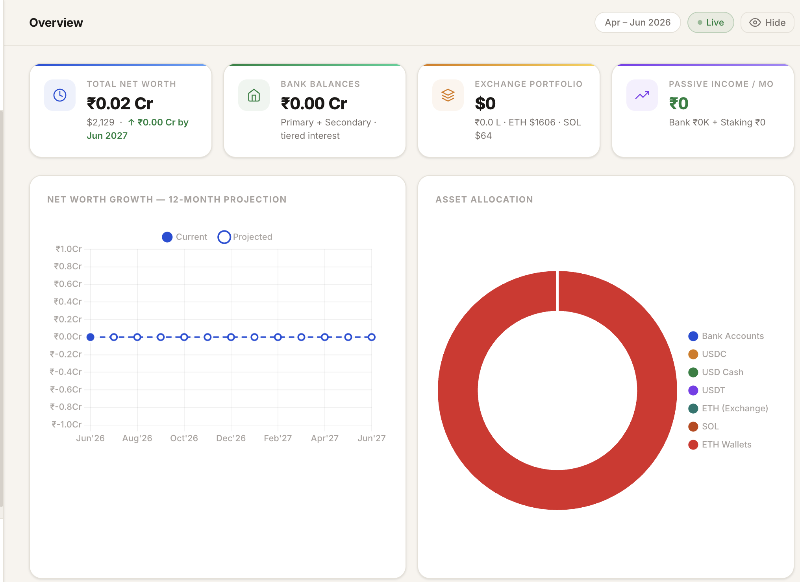
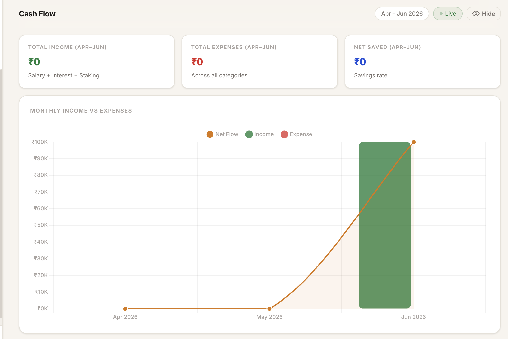
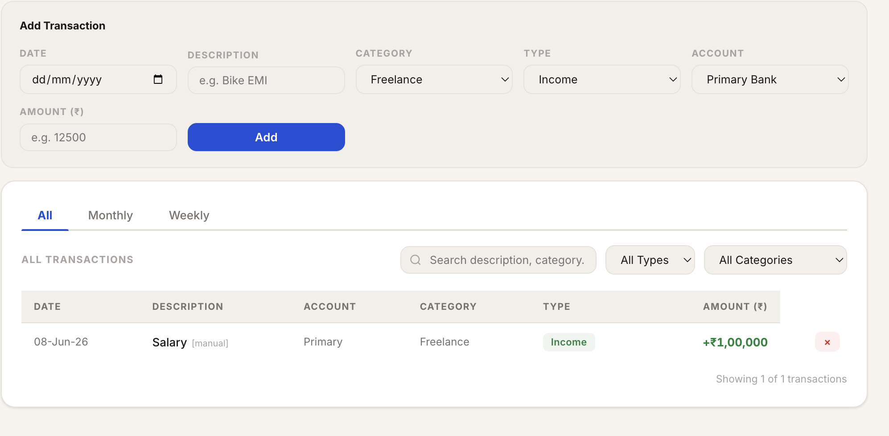
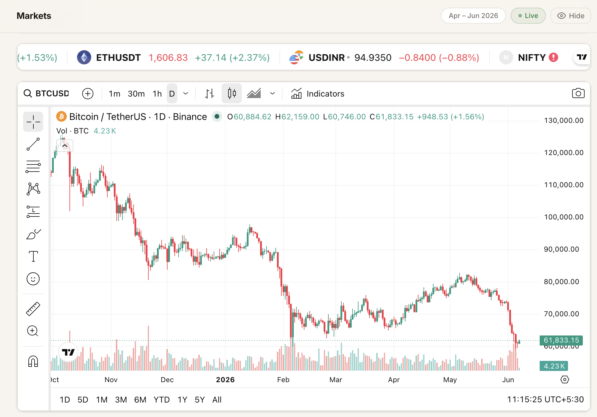

A year ago, building a side project meant writing a PRD, annoying an engineer friend, making a Figma you never looked at again, and eventually abandoning the thing.
Today I can usually get a working MVP over a weekend.
This piece is the workflow I use, the four words you need to know before you start, and a worked example so the abstract gets concrete.
What changed
PRDs existed because engineers were expensive, scarce, and on a different timezone of context. The doc carried the context for them. Onboarding new team members onto a feature was a written exercise: user stories, acceptance criteria, edge cases, the things that could go wrong, the things that should not happen. All of that was the cost of getting other humans aligned on a shared mental model of the thing you wanted built.
For MVPs and personal tools, the engineer is increasingly Claude. In practice, a lot of the onboarding context now lives in a CLAUDE.md. The kickoff is a chat session. Both cost minutes, not days. Acceptance criteria become test cases written before the code. Edge cases become questions you ask the model while you co-work. What used to require a document negotiated across a Slack thread now happens inside a single conversation.
This collapses the product cycle. The cycle that used to be idea, PRD, kickoff, sprint, demo, revise, ship has flattened into idea, spec, plan, MVP. Sometimes in a single afternoon. The intermediate artifacts still exist but they are produced inline, by the same person, in the same session, without the handoffs that used to dominate the calendar.
Five years ago the question was "can we build this?" Today the answer is almost always yes. The real question is whether the thing deserves to exist at all. The PM's job used to be specifying well enough to get engineering started. Now it is deciding well enough that the build is worth doing.
That shift only pays off if you have a workflow for it. Here is mine.
The workflow
The workflow has nine stages. It is not a one-way pipeline. The Plan and Refine stages form a loop, and that loop is where most of the actual product thinking happens. Everything before the loop is research. Everything after the loop is execution.
The first three stages are about narrowing scope. The middle three are about turning scope into something a machine can act on. The last three are about turning that into a thing you can use.
The road bar below is the shape. The numbered glossary that follows it is what each stop on the road actually means.
-
1
Decide. Pick the single problem you are solving. Resist the urge to scope creep. Most personal tools die because they tried to be a platform.
-
2
Research. Look at what exists. Most of the time you find a tool that does 70% of what you want and is missing the 30% you actually care about. That 30% is the project.
-
3
Define features. A flat list. No prioritization yet, no sketches. Just every capability the tool needs to have to be useful to you on day one.
-
4
Plan. Take the spec into a planning skill. Get back an executable plan. More on what a skill is below.
-
5
Refine. Read the plan. Find the parts where you cannot picture the screen, the interaction, or the data flow. Push those back into the spec, edit, replan. Two or three iterations through this loop is normal.
-
6
CLAUDE.md. Write the AI onboarding doc. File structure. Constants. Conventions. The single document that carries the project context into every future session.
-
7
Claude Code. Execute the plan task by task. This is the part that used to be the multi-week sprint.
-
8
Design. UI mockups in Claude.ai using artifacts. A conversational design loop where the output is a working component you can paste into the codebase.
-
9
Claude Code. Final integration pass. Pull the designed components into the implementation. Wire them to data. Ship.
The stages are in order but the time spent per stage is not even. Most of the calendar time goes into Plan and Refine. Most of the wall-clock time goes into Claude Code.
The concepts that matter
Claude on its own gives you a smart writer. The four concepts below are what turn it into a workflow engine. Most people stop at the first and never get to the others. Learning all four is the difference between "I had a chat" and "I shipped a thing".
The diagram shows how they fit together. MCP is the foundation everything else sits on. Connectors are the actual bridges to the tools you already use. Plugins are containers that bundle skills, commands, and connectors into installable packages. Skills are the procedural workflows Claude executes when you ask it to do something specific.
If you only learn one of the four, learn skills. They are what turn an open-ended chat into a process with a known beginning, middle, and end.
MCP
MCP stands for Model Context Protocol. In plain English: a common language that lets any AI app talk to any external tool without each app having to re-implement the integration from scratch.
Before MCP, every AI product that wanted to read your Notion pages had to build its own Notion integration. The same for every product that wanted to read your Linear issues, your Google Drive files, your GitHub PRs. The integrations multiplied: n AI apps times m tools, all of it bespoke. Conceptually, MCP moves the world closer to n + m instead of n × m. One protocol, one server per tool, every compatible client gets the connection for free.
The shortest analogy is the USB-C of AI integrations. Same plug, different devices. Once a tool exposes an MCP server, any AI app that speaks MCP can use it.
Why a PM should care: the connector you set up once works across every Claude surface, and increasingly across other AI tools that support the protocol too. The integration work you do today does not get thrown out the next time you switch tools.
Connectors
A connector is the actual bridge between Claude and a specific external tool. It is the thing you click "Connect" on, the thing that asks you to authenticate, the thing that shows up in the chat as an available capability after you grant access.
The list of connectors most people end up using is short and obvious. Linear for issues and projects. Notion for pages and databases. GitHub for PRs and code. Slack for messages and channels. Google Drive for files. Google Calendar for events. Figma for design files. Each one lets Claude read from and write to that tool with your permission.
The "with your permission" part matters. Connectors do not give Claude blanket access. You authenticate, you scope, you revoke. If you connect Notion and give Claude access to one workspace, that is the only workspace it sees. Pulling the plug is one click in your account settings.
Worth saying once: increasingly, connectors are being built on MCP-style interfaces, which is why portability is improving. The Linear connector you authorize for Claude is the same shape of integration that a different MCP-compatible client could use against the same Linear instance.
Plugins
A plugin is an installable bundle. The same way a browser extension packages a set of features into a single install, a plugin packages a set of capabilities into a single install for Claude Code.
What a plugin can contain: skills, slash commands (shortcuts you trigger with a leading slash), hooks (automated behaviors that fire on specific events, like "run the linter every time a file is saved"), and MCP servers (custom connectors for your team's internal tools that are not in the standard catalog).
The app-store analogy works here, with one caveat. Today, plugins are most relevant inside Claude Code workflows, meaning the terminal-based agent that runs on your machine. The chat-based Claude.ai uses connectors and skills more directly, without the plugin wrapper.
For a PM building personal tools, plugins matter less than skills do, at least at first. Most of what you need is already available as a skill. You graduate into plugins when you have a workflow you want to install once and reuse across projects.
Skills
The most important word of the four. A skill is a procedural workflow Claude can call on. When you invoke a skill, you are not just chatting, you are running a process with a known input, a known output, and a defined sequence of steps in between.
Examples by name from real use. The planning skills I use typically turn a spec into a detailed executable plan with checkbox tasks. The TDD skill writes tests before code, and refuses to write code until the tests fail. The brainstorming skill refuses to start implementing until requirements are clarified. The code-review skill reads a diff against the codebase conventions and returns structured feedback. Each one has rules, each one runs the rules consistently.
Why this matters: a skill is a constraint. Constraints are what make Claude reliable. An open chat will produce whatever feels plausible. A skill will produce exactly the artifact the skill is designed to produce, every time. The first time you run the planning skill it feels like overhead. By the fifth time you run it, you stop writing the boilerplate yourself because you trust the skill to do it.
Most people don't actually need to know the terminology. But if you're spending hours inside Claude, these four concepts are the difference between having conversations and building systems.
Why a finance dashboard
Everyone wants one and most people give up halfway. The default is an Excel sheet, which is fine until it is not. The spreadsheet ceiling is real. No live data layer that survives an exchange rate change. No math layer that holds up once the formulas multiply across tabs. No place to put a tax engine that changes every April. A dashboard fixes all of that, but the cost of building one used to be a side project that ate three weekends and shipped nothing.
The dashboard itself isn't particularly interesting. You can swap it for a reading tracker, a CRM, a deal tracker, or whatever thing you've been procrastinating on building. The interesting bit is the process.
The build, stage by stage
1. Decide
What I picked: a single HTML file, INR-only, with an Indian-context tax engine baked in. 44AD presumptive scheme support, FY 2026-27 slabs, advance tax tracking by quarter, crypto capital gains computed at 30% plus 4% cess under Section 115BBH. Tax rules change frequently and should always be independently verified. Runs from a double-click on file://. No auth. No hosting. No build step.
The do-not-want list was longer than the want list. No multi-currency. No setup wizard. No auto-sync to the exchange. No login. No cloud. No parallel maintenance of a personal version and a shareable version. Saying both lists out loud killed about three weekends of future scope creep before it could start.
2. Research
What existed: Cred, INDmoney, the various Money Manager apps, the open-source dashboards on GitHub. All of them did the easy 70%. None of them did the part that mattered to me.
The missing 30% was specific. FIRC tracking for foreign remittances, because every freelancer billing abroad needs a place to log them. 44AD presumptive scheme support, because the new regime defaults to it for digital receipts. ETH wallet balance integration, because the exchange view is not the wallet view. Crypto CGT with the 115BBH no-loss-setoff rule baked in, because that one rule changes the answer. That 30% I named earlier? This is what it looks like in practice.
3. Define features
A flat list, no prioritization. Twelve tabs at a high level: Overview, Cash Flow, Portfolio, Projections, In-Flight, Transactions, Goals, FIRC, Taxes, Invoices, Markets, Settings. Each one is a single responsibility. No tab tries to be two things.
Writing the list flat means you see the shape of the product before you start arguing about what is v1 versus v2. The argument comes later, in the refine loop. Trying to prioritize while you are still listing is how you end up with a feature you forgot.
4. Plan
Wrote the design spec. Goals, non-goals, file layout, the shape of the CONFIG block. Plain markdown. Ran the planning skill on top of the spec. Output was a 1,200-line plan with checkbox tasks. Each task discrete. Each step verifiable. Each one carrying its own pre-flight check.
A representative task looked like this:
test -f /Users/sid/Desktop/Finance/Finance_Dashboard.html \
&& echo "source OK" || echo "source MISSING"
Expected output: source OKThat level of concreteness is what makes the plan runnable. The spec is the artifact a PM produces. The plan turns the spec into something a machine can run task by task without re-deciding the architecture at every step.
5. Refine
Three iterations on the spec before I locked it. The first iteration was too generous on scope, the kind of pass where you say yes to every nice-to-have because saying no feels premature. The second iteration over-corrected and dropped real features, the kind of pass where you cut so hard you remove the thing you actually wanted. The third iteration was the one that survived.
Refining is mostly subtraction. Every iteration killed something. By the time the plan was locked, the cuts list was longer than the keep list.
6. CLAUDE.md
The AI onboarding doc. File structure, key constants, the localStorage schema, the common patterns (setText, INR, mkChart, calcIDFCInterest), the explicit "do not do X" rules. When I open a fresh session six months from now, this is what gets me back into the project in five minutes instead of an hour.
A small excerpt to give the shape of it:
### Live rates
LIVE object holds current prices. fetchLiveRates() runs on
load and every 5 minutes.
USD/INR sources (tried in order, first success wins):
1. cdn.jsdelivr.net (permissive CORS, works from file://)
2. api.frankfurter.app
3. api.exchangerate-api.com
Crypto sources (tried in order):
1. Binance
2. CoinGecko
3. CoinCapNotice what is in there: the order things are tried, the constraint that drove the order (CORS), and the named alternates. Nothing about why the dashboard exists, nothing about my opinions. Pure operating context for the next agent that touches the file.
7. Claude Code
Ran the plan task by task with the subagent-driven-development skill. Each task ran in its own isolated context. Came back with a diff. I approved or rejected. Because each task was scoped tightly by the plan, no single subagent had to understand the whole file.
The whole 1,200-line plan ran over maybe six hours of clock time, with about ninety minutes of my attention spread across that window. The rest was waiting for diffs and approving them. The model worked, I checked, the next task ran. It is closer to managing a small team of junior engineers than to writing code yourself.
8. Design
UI mockups in Claude.ai using artifacts. I described the screen I wanted, Claude generated a rendered preview I could iterate on inside the chat. For personal tools, I found this faster than opening Figma because the output was already HTML and CSS I could paste directly.
The artifact loop is conversational. "Make the KPI strip tighter." "Swap the chart for a sparkline." "Add a privacy toggle that blurs the numbers when I screen-share." Each turn renders the new version next to the old one. The feedback loop is seconds, not days. What you end up with is HTML and CSS you can paste straight into the codebase, no translation step from mockup to code required.
9. Claude Code (again)
Final integration. The artifacts from stage 8 came back to the terminal. Claude Code wired them into the page-init functions, the chart registry, and the data layer. A handful of layout adjustments, one chart axis fix, done. The seam between design and code, which used to be a hand-off, is now another stage of the same conversation.
Inside the dashboard
Twelve tabs total. Four are the most useful to show. The rest you can see in the repo.
Each of the four below is a hero tab in its own right, in the sense that it is doing something the default tools (banking app, exchange app, accountant's spreadsheet) do not do for you. The rest of the tabs are supporting infrastructure.

Top of the page is the net-worth KPI with a 30-day change indicator. Below that, an allocation pie split by asset class. Below that, a live banner of USD/INR, ETH, SOL, plus India and global CPI. The banner refreshes every 5 minutes.
The thing that makes it useful, rather than just decorative, is that the pie reads from the same data the projection model uses. So the numbers reconcile across tabs. If the Overview says net worth is X, the Projections tab starts its month-one balance at the same X. No two-source-of-truth bugs.

Three KPI cards sit at the top: total income, total expenses, net saved across the visible window. Income is salary plus bank interest plus staking, all already netted out in the underlying model. Expenses are summed live from the Transactions tab, categorised, with manual entries layered on top of the imported ones.
The chart below is the gut-check view. Net flow as a line, monthly income and expense as bars. The window defaults to the current quarter and can be widened to the full projection horizon. This is the tab I open when I am trying to decide whether last month's burn was real or just lumpy timing.

At the top, an Add Transaction form: date, description, category, type (income or expense), account, amount. Below it the full transaction list with All / Monthly / Weekly views, free-text search, and type and category filters. Categories you override stick. Manual entries stay across sessions. The cash flow chart, the projection, the FIRE crossover, all read from this table.
You do not fill this tab by hand. The fastest way to get started is to co-work it: open the dashboard in a Claude session, drop a bank statement PDF or CSV into the chat, and ask Claude to populate the Transactions tab from it. The dashboard adapts to whatever data you bring. Same for crypto exchange statements, same for invoice exports. Whatever shape your data lives in, co-work is the import layer.

Embedded TradingView widgets across the page. Ticker tape at the top spans crypto, FX and an Indian index in one row, which is the actual asset mix anyone tracking INR-denominated net worth cares about. The full chart below carries technical indicators, multiple timeframes, drawing tools. The watchlist symbols and the initial chart symbol can be edited inside the app and persist in localStorage.
This exists because half the time I open a finance app I actually just want to glance at price. Putting it in the same file as the net worth view means I do not switch context to do the easy thing.
The other eight tabs are Portfolio (allocation breakdown across banks, crypto and wallets), Projections (13-month forward simulation with the FIRE crossover line), In-Flight (crypto-to-INR offramps in transit), Goals, FIRC (foreign remittance certificate log with attached PDFs), Taxes (India FY 2026-27, 44AD presumptive, advance tax, crypto CGT), Invoices, and Settings (every personal value editable in the UI, persisted to localStorage). All in the repo.
The bit nobody talks about: maintenance
The building was the easy part. Anybody with Claude and a weekend can produce something that works on a Sunday. The harder question is what happens on the third Monday after. That is the question almost no write-up on the topic answers, and it is the one that decides whether a personal tool is real or just a demo you forget about.
Three concrete failure modes show up over a few months.
Live data sources break or change. An API gets deprecated. A schema changes. A free tier suddenly requires an account. The dashboard silently breaks. Multi-source fallback chains buy time, they do not solve this forever. A line on a chart goes flat and you have a week before you notice.
Tax rules change every year. The FY 2026-27 slabs in this dashboard will be wrong by April. Hardcoded constants rot. Anything that touches real-world policy is a maintenance commitment, not a one-time write. Same goes for any tool wired to compliance rules, pricing schedules, or contract terms.
You forget how it works. Six months later you open the file to fix a number and cannot remember what you decided about the projection model. The CONFIG block helps. A CLAUDE.md in the repo helps more, because it gives the AI you bring back in the future the context you needed.
This is where the four concepts from earlier earn their keep. Skills, connectors, and MCP are where maintenance gets tractable for a non-engineer. A connector means I do not have to remember the shape of Linear's API. The skill means I do not have to remember the planning format. MCP means the same connector keeps working as I move between Claude in the terminal, Claude in my editor, and Claude in the browser.
I open the dashboard once a month, edit a few CONFIG values, ask Claude to fix anything that broke. Sometimes that is a five-minute conversation. Sometimes it is an hour. It is never a weekend. That is the only honest definition of maintainable for a personal tool.
What I'd tell a PM trying this
What mattered
- The real question now is whether the thing deserves to exist. Building it is the cheap part.
- Collapse the cycle. A
CLAUDE.mdreplaces a 12-page PRD. A chat replaces a kickoff. - Learn the four concepts. MCP, connector, plugin, skill. The vocabulary is the toolchain.
- Use skills. They turn an open chat into a process with a known output.
- Don't vibe-code the entire thing and disappear. The fastest way to end up with an unmaintainable mess is to let Claude make every decision for you.
- Plan for maintenance from day one. The build is one weekend. The upkeep is forever.
Fork the dashboard and make it yours. To get started, open the file in a Claude session and co-work it: drop your bank statements into the chat and ask Claude to populate the Transactions tab. The dashboard adapts to whatever you bring.
View on GitHub →What's next
I'm also getting back into writing after a fairly long hiatus.
Next up is a piece on tokenisation, drawing on some of the work we're doing at OpenEden.